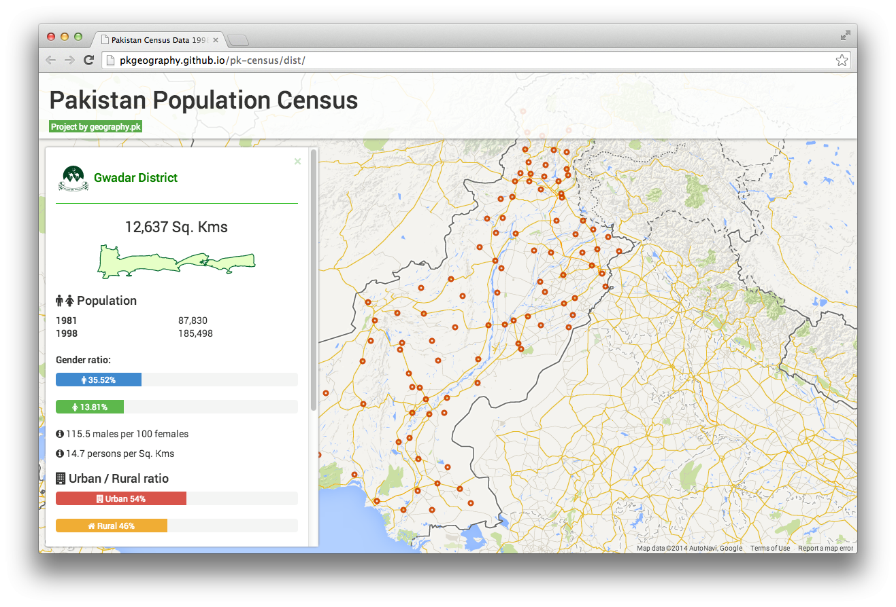

Making public data more readable and accessible
Original idea of gathering information and making them better came into my mind while working on web portal for Hunza landslide and floods of 2010. It was the time with bizarre methodology of collecting information manually from official sources and then converting them into reusable digital format so they can be integrated into accessible and dynamic web.
So last year, in pursuit to accomplish this idea, I started with CodePakistan on GitHub and invited everyone to join in for contribution. Little that I knew—there was already a group of amazing people doing somewhat similar stuff with same name. So I quickly dissolved CodePakistan – as there is no need to reinvent the wheel. While they are already working on making apps and code available for public, I thought I would rather stick to public data and information only. So here it is at Github with name of Geography of Pakistan and as a child project of Geography of Pakistan blog.
First comprehensive data compilation is of population census data from 1998. This data is available in common digital formats at http://git.io/pk-census. The data is sourced from official source (census.gov.pk) where it is not in a reusable digital format and is quite inconsistent—as well as, 1998's collection is the only census data available there. The process carried following methodologies:
- Fetch data in its current form
- Convert it to some reusable format
- Restructure it
- Make it accessible
- Build real life usage example
I also made a deck about it and had also been sharing progress over social platforms with hashtag #MeraData.
Second completed data compilation is for district level boundaries data. This data is also available in multiple formats at http://git.io/pk-districts.
All this data is still incomplete due to its certain inconsistencies i.e. missing data, wrong compilation etc. All these and further issues are documented in issue trackers of repositories for each sub-project at Geography of Pakistan hub. Your input in these projects is most valuable and always welcome.
Nevertheless, it is quite enough data to produce a real life usage example, I went ahead and created a web portal that visualizes the data interactively. The sole purpose of this all work is to make the data more accessible, readable, understandable, considerable and reusable.
Visit it at http://pkgeography.github.io/pk-census
This is an initial version and it shall be updated as more data is added. Do visit and share with others so everyone can make a good use of it.